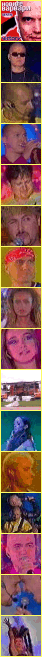

|  |
 Жалко,
че всички хубави неща рано или
късно свършват. Този развой на
съдбата следва и турнето "Виктори
- турнето на новите варвари".
След петнадесет концерта в
страната и специално участие в
Солун, Слави и екипа се прибират в
София и всички се връщат към
нормалния си ритъм на живот. На 24
септември, отново в 22:30 по bTV, на
екрана ще се появи Дългия, ще се
заяде няколко пъти с Годжи, и най-грандиозното
турне в историята на
българската музика и шоубизнес
изобщо, вече ще бъде само спомен. Жалко,
че всички хубави неща рано или
късно свършват. Този развой на
съдбата следва и турнето "Виктори
- турнето на новите варвари".
След петнадесет концерта в
страната и специално участие в
Солун, Слави и екипа се прибират в
София и всички се връщат към
нормалния си ритъм на живот. На 24
септември, отново в 22:30 по bTV, на
екрана ще се появи Дългия, ще се
заяде няколко пъти с Годжи, и най-грандиозното
турне в историята на
българската музика и шоубизнес
изобщо, вече ще бъде само спомен.
А
ще има наистина какво да си
спомняме. И ще си спомнят всички - и
тези, които харесват Слави, и
тези, които побесняват когато чуят
името му. Защото концерти, като
тези, които видя цялата страна, се
провеждаха за първи път в страната
ни. Скоро ще излезе и статистика -
колко хиляди са присъствали на
концертите, колко са били с билети,
колко са били гратисчиите и т.н.
Естествено, няма да пропуснат да
направят и сметка на приходите на
екипа. Но това далеч не е най-важното
или интересеното. Важното е, че
Слави успяваше да изправи на крака
цели стадиони и да ги кара да пеят
... да пеят на български и то имено
български и македонски народни
песни. За пореден път той успя да
покаже, че е социално ангажиран и
патриотизма не му е чужд като
чувство. Сигурно е имало много
млади хора, които са се замисляли
след концертите му за бъдещето си и
това къде да го изживеят. Или
такива, които просто са се
замисляли в думите, чути по
концертите. За всички останали
можем само да кажем, че са
пропуснали много от смисъла и на
концертите, и на турнето като цяло.
Слави направи нещо непознато
досега в България - изполва
музикалното шоу на такава голяма
сцена пред такава широка публика
за да поговори за всеобщи наболели
проблеми. Както са правели не един
път Майкъл Джексън, U2, Марая Кери,
Елтън Джон и редица
световноизвестни личности от
музикалния бизнес. Всички от екипа
доказаха, че те живеят в тази
страна и се интересуват от
проблемите й. И пожелаха да
направят съпричастни към това и
хилядите по стадионите.
А
шоуто беше неповторимо. Светлини,
музика, красиви танцуващи момчета
и момичета, пиротехника, хумор ...
Какво повече може да се иска от
едно подобно концертно изпълнение.
Уверени сме, че не е имало човек,
който да е излязъл и да е споделил
недоволств от видяното. Просто
защото, шоу като това оставя всеки
със зяпнала уста и замислен.
Замислен върху видяното на този
концерт, върху чутото толкова
вечери подред пред телевизионния
екран, върху предаденото по
новинарските емисии, върху това,
което се случва вече толкова
години подред така близо до нас ...
Турнето
свърши. Слави отново се връща на
телевизионния екран. Пет дни в
седмицата, от 22:30 по bTV. Може мястото
на летните ни срещи с Дългия да се е
променило, но нищо не може да
промени отношението му към нас и
всичко, което ни обединява като
нация. Гледайте, ще си заслужава ...
както и концертите отекнали вече
някъде в коридорите на времето на
отминалото лято. |
© 2001
СлавиWeb. Всички права запазени. |